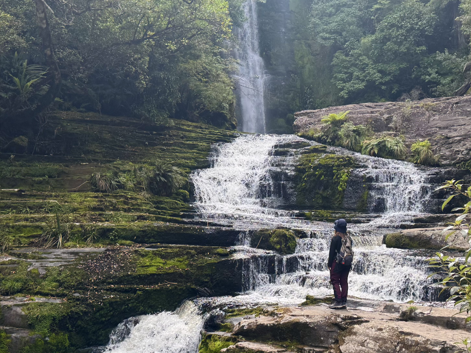

Fri, 7 Mar 2025
8°C - 19°C

Queenstown
QT makes me feel things TT <3
A land of diverse landscapes, from rolling hills and vineyards to rugged mountains and historic gold rush towns.
QT makes me feel things TT <3
Unfortunately we went during a dry spell :( Wasn't much to see...


Swing and scream.
The ice bar was a surprisingly cool experience.
I must have gotten fitter because this is supposed to be comparable difficulty to Mt Fyffe but I didn't find this too difficult at all :) Yay!
12,000ft! Lesgoo